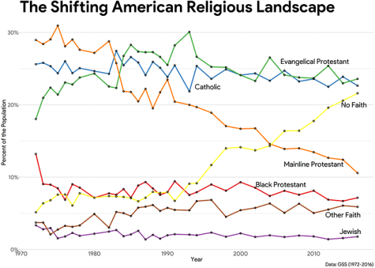
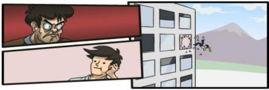

If you don’t fight, on a given issue, you are functionally surrendering.
But if you do fight – you are, in all likelihood, warping yourself. You’re making the fight a part of you, and becoming a person who fights about that issue, to a greater extent than you were before. And sometimes that’s worse than surrender.
It’s important to keep yourself centered on the ideas that you actually care about, and not get lost in the topical battles that the world throws your way. If you let your priorities be defined by the enemy, then win or lose…you lose.
Also there are dessert tarts in English. Tart is cognate with tortellini (Italian, diminutive plural) and tortilla(Spanish, diminutive) and tarte (French).
there is. it’s a masculine form of ‘mosca’ and less commonly used but if you pointed at a large flying bug and called it 'mosco’ in my dialect it would be unremarkable in casual use.
reinterpreting 'dumpling’ as a diminutive is funny because it isn’t a diminutive (and also 'dumple’ is a silly word)
'reinterpreting’ mosquito and tortilla as diminutives is just confusing, because there’s no reinterpretation, they are in fact diminutives. it’s people pointing at the straightforward etymology of words and going 'ha! wouldn’t it be silly if this were true’.
I’ve heard a couple of explanations. Wikipedia suggests “because the tortilla is ‘carrying’ a lot of ingredients, the way you’d load a donkey down with stuff.” There’s also a story about it being invented/popularized by some particular vendor who rode a donkey between villages.
If the average American wants to spend their extra money on moon landings, they are free to do so. But the government taking their taxes in and spending them on pointless stunts, that by Kennedy’s own admission in the first link above “wreck the budget”, is not acceptable. If you love space so much Kennedy why don’t you finance it with your own family fortune? Oh right, you (direct quote) “Don’t care that much about space”.
Imagine having this little psychic energy.
More seriously, those who do not practice mythmaking…
Those who do practice mythmaking generally don’t need, or for that matter want, the government doing it for them.
I’m pro-space-exploration, but you’re making the wrong appeal here.
Oh, sure, the government can benefit from it plenty, under the right circumstances.
But this is a pitch for people who already view themselves as having been subsumed into a collective identity under the auspices of the government. Which is not much of an advertisement for someone’s “psychic energy.”
If the average American wants to spend their extra money on moon landings, they are free to do so. But the government taking their taxes in and spending them on pointless stunts, that by Kennedy’s own admission in the first link above “wreck the budget”, is not acceptable. If you love space so much Kennedy why don’t you finance it with your own family fortune? Oh right, you (direct quote) “Don’t care that much about space”.
Imagine having this little psychic energy.
More seriously, those who do not practice mythmaking…
Those who do practice mythmaking generally don’t need, or for that matter want, the government doing it for them.
I’m pro-space-exploration, but you’re making the wrong appeal here.
as Snarp said to some-triangles, solving the movie for him: "Movie is Anthy’s first Mary Sue fic of her own, which is why she gets to sexually humiliate Utena and Utena just thinks that makes her hotter and also her hair’s really good, and the story’s kind of unclear about what cars are but knows it’s DEFINITELY a big deal when you get to drive one YOURSELF, and Akio died before the movie even started, and also Touga for good measure, and Nanami’s a cow" hope that helps, have a nice day
I have nothing to say to this, but I feel that it ought to be visible to the public at large.
Thinking about all the “tweaked” remakes and reboots - the gender-swaps, the live-action Disney - and I’m realizing how well Adolescence of Utena hit that “completely different, but totally the same” sweet spot they seem to be going for.
Like, there’s crazy-ass castle-in-the-sky architecture still, only it’s constructivist not baroque. The art style and character design is slightly different, but the same. There’s all the same characters, except they’re different. There’s still weird imagery, but it’s totally new weird imagery even when it’s still weird car imagery, and it sums up to the same vector, only of a different direction and magnitude.
…I guess that depends what you think it is that they’re going for.
The Disney live-action remakes strike me as an attempt to recapture the numinous magic associated with the Disney Animated Classic canon, only in an idiom that’s more actually numinous, at least to contemporary tastes. We can take lush live-action visuals with some CGI much more seriously than we can take cutesy squash-and-stretch cel animation. We have the good old enchanted romances and adventures that we love, but without comic relief talking animals or immersion-breaking musical numbers. (And the culturally cringey stuff of yesteryear gets cleaned up while we’re at it.) It’s [an attempt at] the pure uncut Once Upon A Time magic that so many people of our generation remember Disney films as being, even though they never actually really were that thing.
You may or may not approve of that project, you may or may not think that Disney is doing a good job, but the mission statement is pretty coherent.
Meanwhile, Adolescence of Utena is just fucking bonkers. Like, it’s working with a bonkers source text to begin with, and it ups the madness considerably just in terms of imagery and structure etc., but it’s also metanarratively bonkers – I genuinely don’t understand what it thinks that it’s offering to fans of the series, apart from some shots and scenes that are stunningly gorgeous independent of any context.
I mean, I like it, mostly, but I’m not sure how to parse it except as “very pretty fanfic composed by someone who wasn’t paying very much attention to the original text and doesn’t understand the things about it that mattered.”
So, like, this seems like it should be the very most obvious and lukewarm of takes:
Incest porn started getting big around the same time that it started being totally commonplace, in normative middle-class society, for men and boys to live in the same house as step-mothers and step-sisters and step-daughters – women to whom they have no blood relation, but with whom they are expected to interact in exactly the same way that they would interact with their biological mothers and sisters and daughters.
I’m not even saying that I believe this, particularly. I’m saying that I’ve seen a lot of public bafflement about the rise of incest porn, and I’ve never once seen anyone raise this point, and that fact surprises me.
“Rape is about power, not sex” works on an equivocation on the meaning of “about”
Motte: “about” = “most morally salient aspect”
Bailey: “about” = “motivation”
How many asexuals have committed this crime, I wonder.
A fair number, I would guess. Your superiors and squadmates in the dictator’s suppression force don’t really care about your personal sexual quirks.
***********
That said –
The standard feminist talking point isn’t wrong, as far as it goes, given a certain (reasonable and useful) construction of what it means for something to be “about sex.”
The important thing is that, using that construction, consensual sex also usually isn’t about sex.
The church is not actually falling apart. America is becoming more secular, but from the perspective of the church that’s not necessarily a bad thing.

Interesting, and definitely worth noting, but I am unconvinced.
My impression is that we’re at the stage of having a lot of notional check-the-box-on-the-form Catholics and Evangelicals who don’t buy into the theology, who refuse to be constrained in their behavior by religious dictates, and whose kids are tremendously likely just to drop the identification altogether. Y’know, where mainline Protestants were a generation or two ago. Certainly, when religious people complain about seeing their congregations and organizations falling apart, I don’t think they’re making it up.
(In part I base this on analogy to Judaism, which has also been pretty stable for decades according to this chart, but which is definitely suffering from institutional disintegration in every less-orthodox-than-the-Orthodox denomination.)
With Catholicism in particular, of course, the waves of mostly-Catholic immigrants present some level of complication.
Rod says totally without irony that there really is no place safe [ from modernity ] while noting in passing that Polish young people are very angry about sexual abuse by the clergy and that the church has basically ignored their anger, but the real threat to the church is left wing political parties and “soft totalitarianism”.
I wonder what the church could do to reverse its rapidly declining membership

…is this a serious question? Because the actual answer is “not much.”
Look, say what you want about Dreher and his tradcon buddies – and I have spent way too much of my time fulminating against Dreher and his tradcon buddies, given their general irrelevance to everything – it’s hard to charge them with not caring enough about Church abuse scandals. They are fucking obsessed with Church abuse scandals; they talk endlessly about how getting the Church to clean up its act on that front is literally the most important thing in the entire world, about how the Church’s complacency and defensiveness in the face of sexual misconduct allegations is going to Destroy Civilization. Drawing an equivalence between “passionately Catholic” and “blase about Church abuse scandals” just doesn’t match up to the evidence.
But Dreher and his tradcon buddies are also perfectly aware that all the various cultural moves that can be lumped under “modernizing” are not going to save the Church either. And you know it too, because you’re not stupid.
A Church that is totally inoffensive to modern sensibilities will not be as appealing to a modern audience as cultural competitors that don’t come with all the weird difficult baggage of being, well, the Church. We’ve seen ample evidence of that in America and in Western Europe, as all the struggling-to-be-cool religions get completely steamrolled by an Actually Cool lack-of-religion (or, if you prefer, by Actually Cool modern cults). The Church’s only survival strategy is to operate in a market where it has an advantage, which pretty much means doubling down on its ancient institutional grandeur.
Except that doesn’t work either, because…modern audience. In the end, when you take away its enforced monopoly power, there just aren’t enough people who want to buy the only thing it has to sell. All it can do is die.
No surprises that it’s not going to do so gracefully.
anyone who wants a restoration of sectarianism is (hopefully) going to be disappointed and the church will never have the monopoly dominance that it once enjoyed when it had the threat of force to back it up, but surely the Vatican can outplay the Scientologists and the Pentecostals and the rest given the memetic firepower and installed userbase they have at their disposal.
I mean at the very least it should be able to stay ahead of the Mormons.
the tradcons may wring their hands over sexual abuse scandals but they don’t want to throw out any baby with that bathwater, they’re not willing to undertake any serious institutional reforms that might actually reduce future scandals as that would inevitably also erode the grip of the trad memes that they care about much more.
I confess that I’m kinda confused by both of these points.
Globally speaking, the Church is way ahead of all its competitors in terms of memetic dominance in the religion field, with the possible exception of certain forms of Islam. It’s not as, uh, niche-branded and all-encompassing as something like Orthodox Judaism, so it doesn’t have the kind of success that the Orthodox have had hanging onto a relatively large slice of a very small faith base. But that goes with the territory of being huge and global and catholic-in-the-literal-sense.
Like everyone, I have my own backseat-driver thoughts regarding Exactly How the Church Could Be Doing Better For Itself, but I don’t think there’s any evidence that it’s failing to live up to the standards set by comparable competitors. (Barring its response to the sex abuse scandals, those are some unforced errors.)
Mostly it’s falling apart in the exact same ways that almost every major religion is falling apart, and having its lunch money stolen by the exact same forces that are stealing everyone else’s lunch money.
**********************
OK, seriously: what institutional reforms are you talking about, short of things that amount to “stop being the Church?” I have thoughts, but they’re probably unhelpful until I have a better sense of what’s under discussion.
Rod says totally without irony that there really is no place safe [ from modernity ] while noting in passing that Polish young people are very angry about sexual abuse by the clergy and that the church has basically ignored their anger, but the real threat to the church is left wing political parties and “soft totalitarianism”.
I wonder what the church could do to reverse its rapidly declining membership
…is this a serious question? Because the actual answer is “not much.”
Look, say what you want about Dreher and his tradcon buddies – and I have spent way too much of my time fulminating against Dreher and his tradcon buddies, given their general irrelevance to everything – it’s hard to charge them with not caring enough about Church abuse scandals. They are fucking obsessed with Church abuse scandals; they talk endlessly about how getting the Church to clean up its act on that front is literally the most important thing in the entire world, about how the Church’s complacency and defensiveness in the face of sexual misconduct allegations is going to Destroy Civilization. Drawing an equivalence between “passionately Catholic” and “blase about Church abuse scandals” just doesn’t match up to the evidence.
But Dreher and his tradcon buddies are also perfectly aware that all the various cultural moves that can be lumped under “modernizing” are not going to save the Church either. And you know it too, because you’re not stupid.
A Church that is totally inoffensive to modern sensibilities will not be as appealing to a modern audience as cultural competitors that don’t come with all the weird difficult baggage of being, well, the Church. We’ve seen ample evidence of that in America and in Western Europe, as all the struggling-to-be-cool religions get completely steamrolled by an Actually Cool lack-of-religion (or, if you prefer, by Actually Cool modern cults). The Church’s only survival strategy is to operate in a market where it has an advantage, which pretty much means doubling down on its ancient institutional grandeur.
Except that doesn’t work either, because…modern audience. In the end, when you take away its enforced monopoly power, there just aren’t enough people who want to buy the only thing it has to sell. All it can do is die.
No surprises that it’s not going to do so gracefully.